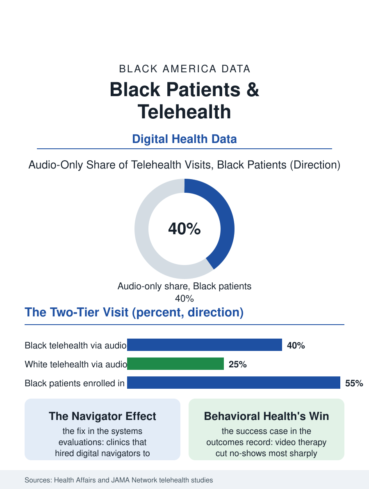

Black Public Health
The Two-Tier Visit: Black Patients and Telehealth
Black patients use telehealth heavily but through its thinnest channel, the audio-only call, in a divide written by broadband, portals, and privacy. The telehealth file.

The video visit arrived as an emergency measure and stayed as infrastructure. Telehealth now carries a substantial share of American outpatient care, especially behavioral health, and its distribution across the population was supposed to be the great leveler: no bus, no waiting room, no time off work. The utilization data tell a more specific story, in which Black patients use telehealth at meaningful rates but are routed disproportionately to its thinnest version, the audio-only phone call. This article reads the telehealth file.
Video, Audio, and the Two-Tier Visit
The claims analyses from the pandemic's peak and its long tail agree on the pattern. Black patients' telehealth use concentrated in audio-only visits at rates markedly above white patients', and the audio visit is not a trivial difference: it is the visit without the visual examination, without the shared screen of lab results, and, in several payment systems, the visit reimbursed at lower rates and scheduled in shorter slots. The causes stack across the digital divide this atlas has already mapped: broadband subscriptions and device quality in the household files, data-capped phone plans standing in for home internet, and the privacy arithmetic of crowded housing, where a video visit about a sensitive matter competes with the whole household's ears. Clinic systems made their own contributions: patient portals, the front door to video care, enroll Black patients at lower rates, an enrollment gap produced by the systems' own invitation practices, tablet-and-smartphone assumptions, and English-first interfaces. Where systems invested in digital navigators, staff whose entire job is enrolling patients and teaching the platform before the appointment, the enrollment and video-completion gaps narrowed in the published evaluations, another instance of the file's most portable lesson: disparities attributed to patients repeatedly resolve into disparities of onboarding.
Where Telehealth Genuinely Delivered
The file is not a complaint; parts of it are the best access news in this atlas. Behavioral health is the flagship: therapy and psychiatry by video removed the transportation and stigma barriers simultaneously, no-show rates in several large systems fell most sharply among Black patients, and continuity, the same therapist across months, became logistically possible for patients whose work schedules had always defeated weekly office visits. Chronic disease management found its own wins in remote monitoring: home blood pressure cuffs feeding readings to a care team produced, in the hypertension programs, control improvements with strong Black enrollment when the equipment was supplied rather than prescribed to be bought. The pattern across the successes is consistent enough to name: telehealth delivered for Black patients where the program designed the whole chain, device, connectivity, onboarding, and follow-up, and disappointed where it simply moved the existing visit onto a screen and called the move equity. The distinction matters for the policy chapter, because payment parity for telehealth, including the contested question of audio-only reimbursement, is being decided now in statehouses and in Medicare rulemaking, with the audio question cutting directly across racial lines: ending audio payment entirely would, on current utilization, remove the channel Black patients use most, while paying it forever at parity risks entrenching the two-tier visit as the permanent settlement.
The Settlement Being Written
The mature systems in the data are converging on a clinical triage rather than a technology ideology: video where sight matters, audio where voice suffices, in-person where hands are required, with the patient's actual connectivity treated as a clinical fact in the chart rather than a personal failing. Broadband policy has become health policy by the same logic; the subsidy programs that put home internet into low-income households appear in the telehealth literature as utilization interventions, and their funding lapses register in clinic no-show data. The file's research frontier is the outcome comparison the early years could not run: whether the conditions managed heavily by telehealth in Black communities, hypertension, diabetes, depression, show measurably different control rates in the years ahead, the verdict that will decide whether the video visit was a bridge or a detour. The telehealth file closes on the number it opened with. A technology that required nothing but a phone reached everyone; a technology that required broadband, a portal account, a private room, and a charged tablet reached the population in proportion to those possessions. The screen did not create the divide in the chart. It simply made the divide visible in a new column, where it can now be measured, and therefore, by the rule this atlas applies everywhere, assigned to someone to close.
More in Black Public Health
Hypertension Among Black Adults: Prevalence, Control, and Consequences
About 55 percent of Black adults have hypertension — the highest rate of any U.S. group. Prevalence, onset, control, and the stroke, heart, and kidney consequences in the data.
Diabetes Among Black Adults: Prevalence and Complications
Nearly one in five Black adults has diabetes, diagnosed or undiagnosed — and its complications fall with particular weight. The CDC data on prevalence, control, and outcomes.
Black Life Expectancy: The Gap at Birth and Its Causes
Black life expectancy at birth is about 73 years, roughly five years below the national figure — the summary measure of every health gap in this section. The CDC data.
Source: Health Affairs and JAMA Network studies of telehealth utilization by race; Medicare and commercial claims analyses; FCC broadband data.